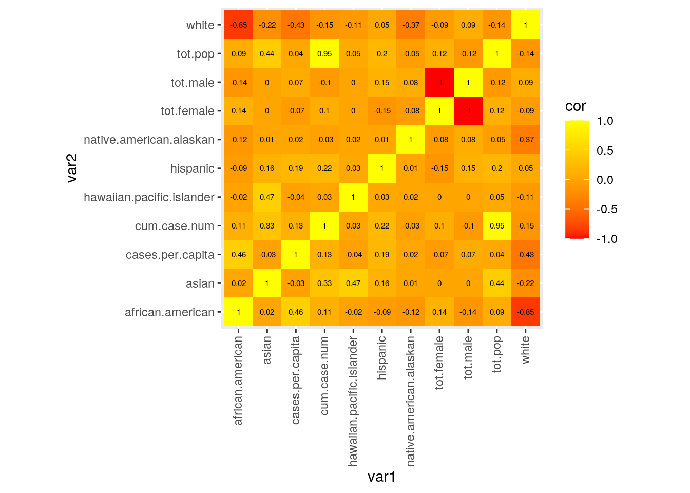
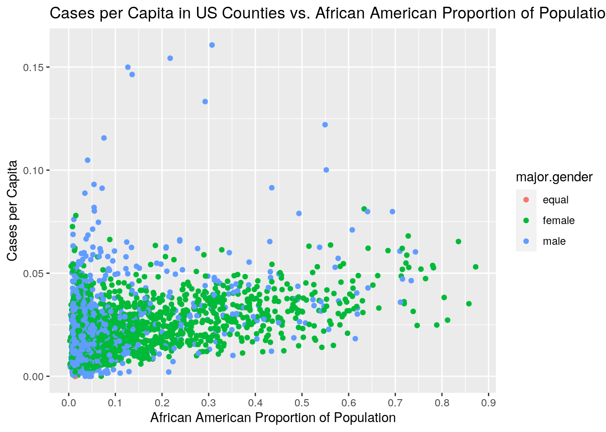
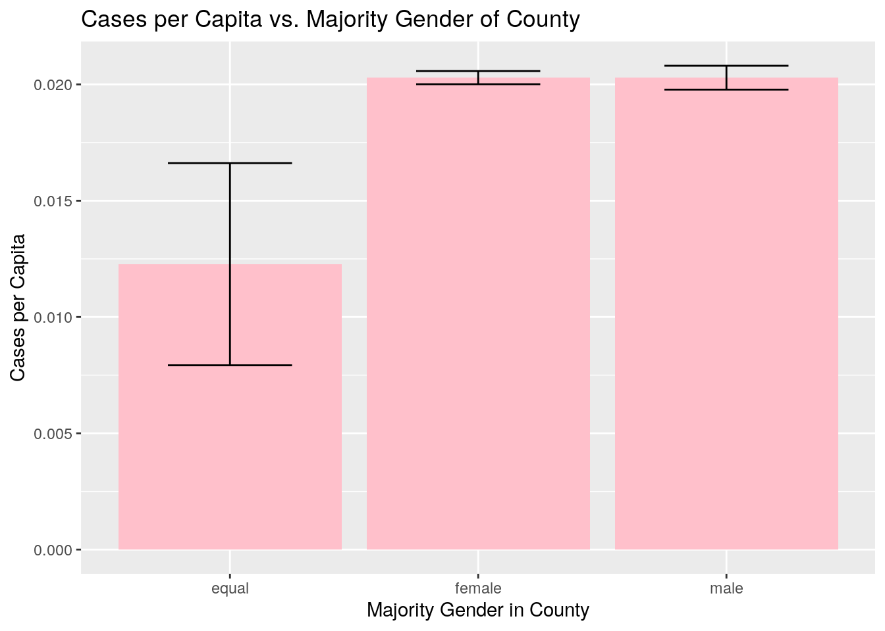
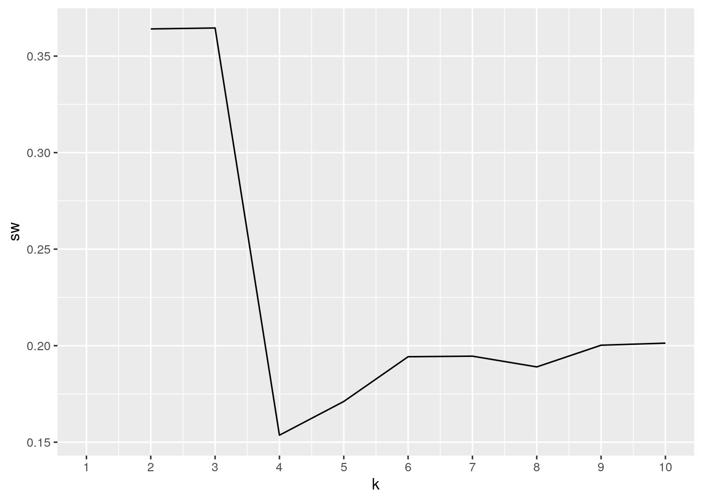
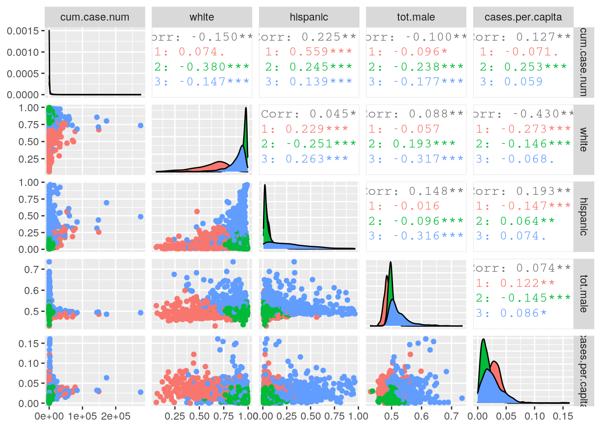
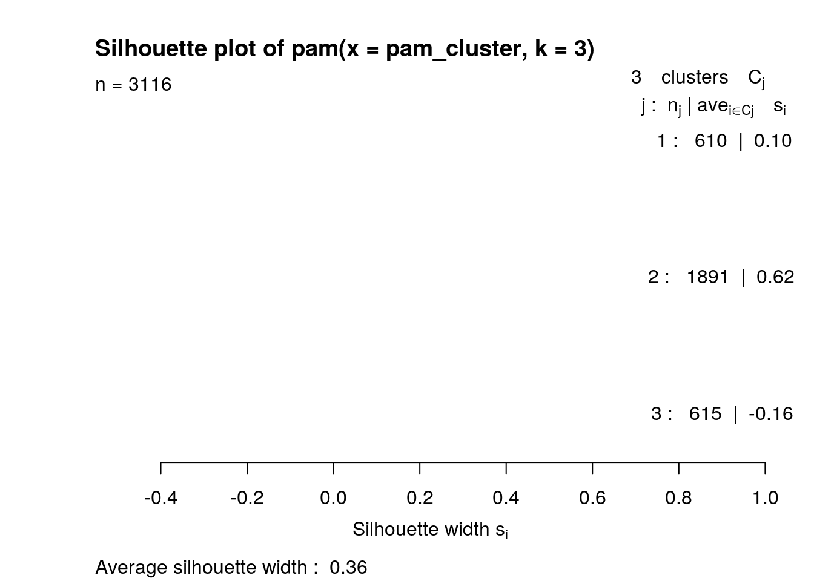

The coronavirus pandemic has been one of the largest public health crises that the US has faced in recent history. However, the effects of it have not been equally spread out in the population. In order to investigate which groups are more affected, I will be using two datasets. One is from the US Census bureau and includes county population estimates for 2010-2019. These population estimates are further divided up by age, gender, and race/ethnicity. These estimates are calculated using birth, death, and migration numbers from each county and adding these numbers to the populations from the 2010 Census.The second dataset is a time series cumulative total number of confirmed coronavirus cases from January 22, 2020 to October 5, 2020 organized by USA Facts. The data is collected from county or state public health agencies. Being able to understand how demographics relate to infection rates could be informative about issues in how the US deals with public health. Previously released research indicates that certain groups, such as African-Americans and Hispanics, have higher infection rates than other groups. I would expect to see a similar pattern in the data. I don't expect there to be much of a relationship between gender and infection rate however.
The USA Facts dataset includes county name and state name, with respective FIPS codes for each, as well as date entries from 1/22/20 to 10/5/20 with the cumulative confirmed case count as the value. The Census dataset similarly includes county and state names with corresponding FIPS codes. It also includes variables for year, which refers to the date the population estimates are for, age group, and the population estimates. The population estimates include total population, male and female population, and population estimates for all races and ethnicities considered by the Census Bureau in various combinations. These are also partially divided by marital status, whether someone is alone or is in a combination.
library(tidyverse)
library(openintro)
county_case_cum <- read_csv("~/content/countyData.csv")
# county_case_cum <- county_covid %>% pivot_longer(-(1:4),
# names_to = 'date', values_to = 'case_num') %>%
# rename(County.Name = `County Name`) %>% unite(col =
# 'county_state', c(County.Name, State), remove = F) %>%
# group_by(county_state) %>% summarize(cum.case.num =
# max(case_num, na.rm = T))
glimpse(county_case_cum)## Rows: 3,195
## Columns: 2
## $ county_state <chr> "Abbeville County_SC", "Acadia Parish_LA", "Accomack Cou…
## $ cum.case.num <dbl> 640, 2993, 1188, 13672, 77, 336, 373, 656, 9900, 42, 29,…state_abbr <- read_csv("~/content/stateEstimates.csv")
# state_abbr <- county_demo %>% filter(YEAR == 12, AGEGRP ==
# 0) %>% select(-(1:3)) %>% mutate(STNAME =
# state2abbr(.[[1]])) %>% unite(col = 'county_state',
# c(CTYNAME, STNAME), remove = F)
head(state_abbr)## # A tibble: 6 x 78
## county_state STNAME CTYNAME YEAR AGEGRP TOT_POP TOT_MALE TOT_FEMALE WA_MALE
## <chr> <chr> <chr> <dbl> <dbl> <dbl> <dbl> <dbl> <dbl>
## 1 Autauga Cou… AL Autaug… 12 0 55869 27092 28777 20878
## 2 Baldwin Cou… AL Baldwi… 12 0 223234 108247 114987 94810
## 3 Barbour Cou… AL Barbou… 12 0 24686 13064 11622 6389
## 4 Bibb County… AL Bibb C… 12 0 22394 11929 10465 8766
## 5 Blount Coun… AL Blount… 12 0 57826 28472 29354 27258
## 6 Bullock Cou… AL Bulloc… 12 0 10101 5508 4593 1629
## # … with 69 more variables: WA_FEMALE <dbl>, BA_MALE <dbl>, BA_FEMALE <dbl>,
## # IA_MALE <dbl>, IA_FEMALE <dbl>, AA_MALE <dbl>, AA_FEMALE <dbl>,
## # NA_MALE <dbl>, NA_FEMALE <dbl>, TOM_MALE <dbl>, TOM_FEMALE <dbl>,
## # WAC_MALE <dbl>, WAC_FEMALE <dbl>, BAC_MALE <dbl>, BAC_FEMALE <dbl>,
## # IAC_MALE <dbl>, IAC_FEMALE <dbl>, AAC_MALE <dbl>, AAC_FEMALE <dbl>,
## # NAC_MALE <dbl>, NAC_FEMALE <dbl>, NH_MALE <dbl>, NH_FEMALE <dbl>,
## # NHWA_MALE <dbl>, NHWA_FEMALE <dbl>, NHBA_MALE <dbl>, NHBA_FEMALE <dbl>,
## # NHIA_MALE <dbl>, NHIA_FEMALE <dbl>, NHAA_MALE <dbl>, NHAA_FEMALE <dbl>,
## # NHNA_MALE <dbl>, NHNA_FEMALE <dbl>, NHTOM_MALE <dbl>, NHTOM_FEMALE <dbl>,
## # NHWAC_MALE <dbl>, NHWAC_FEMALE <dbl>, NHBAC_MALE <dbl>, NHBAC_FEMALE <dbl>,
## # NHIAC_MALE <dbl>, NHIAC_FEMALE <dbl>, NHAAC_MALE <dbl>, NHAAC_FEMALE <dbl>,
## # NHNAC_MALE <dbl>, NHNAC_FEMALE <dbl>, H_MALE <dbl>, H_FEMALE <dbl>,
## # HWA_MALE <dbl>, HWA_FEMALE <dbl>, HBA_MALE <dbl>, HBA_FEMALE <dbl>,
## # HIA_MALE <dbl>, HIA_FEMALE <dbl>, HAA_MALE <dbl>, HAA_FEMALE <dbl>,
## # HNA_MALE <dbl>, HNA_FEMALE <dbl>, HTOM_MALE <dbl>, HTOM_FEMALE <dbl>,
## # HWAC_MALE <dbl>, HWAC_FEMALE <dbl>, HBAC_MALE <dbl>, HBAC_FEMALE <dbl>,
## # HIAC_MALE <dbl>, HIAC_FEMALE <dbl>, HAAC_MALE <dbl>, HAAC_FEMALE <dbl>,
## # HNAC_MALE <dbl>, HNAC_FEMALE <dbl>The first dataset started with cumulative case counts per day in US counties. I used pivot_longer in order to compress the data into a date column and a cumulative case column. I also appended the abbreviations for the state onto each county entry because there are duplicate counties in different states. To collapse the data I grouped by county+state and selected the row with the highest case number as it is the most recent data. Only the county+state and cumulative case number data were preserved.
The second dataset was a similar story. I only selected data where the year value was 12 and age group was 0 as this represented the total population estimates when the most recent estimate was generated. As with before, a variable for county+state names was created. The numeric identifiers were dropped. Since select was used the rest of the columns were preserved.
joined_data <- state_abbr %>% inner_join(county_case_cum)
# setdiff(union(county_case_cum$county_state,
# state_abbr$county_state),
# intersect(state_abbr$county_state,
# county_case_cum$county_state)) %>% length
# setdiff(state_abbr$county_state,
# county_case_cum$county_state)
head(joined_data)## # A tibble: 6 x 79
## county_state STNAME CTYNAME YEAR AGEGRP TOT_POP TOT_MALE TOT_FEMALE WA_MALE
## <chr> <chr> <chr> <dbl> <dbl> <dbl> <dbl> <dbl> <dbl>
## 1 Autauga Cou… AL Autaug… 12 0 55869 27092 28777 20878
## 2 Baldwin Cou… AL Baldwi… 12 0 223234 108247 114987 94810
## 3 Barbour Cou… AL Barbou… 12 0 24686 13064 11622 6389
## 4 Bibb County… AL Bibb C… 12 0 22394 11929 10465 8766
## 5 Blount Coun… AL Blount… 12 0 57826 28472 29354 27258
## 6 Bullock Cou… AL Bulloc… 12 0 10101 5508 4593 1629
## # … with 70 more variables: WA_FEMALE <dbl>, BA_MALE <dbl>, BA_FEMALE <dbl>,
## # IA_MALE <dbl>, IA_FEMALE <dbl>, AA_MALE <dbl>, AA_FEMALE <dbl>,
## # NA_MALE <dbl>, NA_FEMALE <dbl>, TOM_MALE <dbl>, TOM_FEMALE <dbl>,
## # WAC_MALE <dbl>, WAC_FEMALE <dbl>, BAC_MALE <dbl>, BAC_FEMALE <dbl>,
## # IAC_MALE <dbl>, IAC_FEMALE <dbl>, AAC_MALE <dbl>, AAC_FEMALE <dbl>,
## # NAC_MALE <dbl>, NAC_FEMALE <dbl>, NH_MALE <dbl>, NH_FEMALE <dbl>,
## # NHWA_MALE <dbl>, NHWA_FEMALE <dbl>, NHBA_MALE <dbl>, NHBA_FEMALE <dbl>,
## # NHIA_MALE <dbl>, NHIA_FEMALE <dbl>, NHAA_MALE <dbl>, NHAA_FEMALE <dbl>,
## # NHNA_MALE <dbl>, NHNA_FEMALE <dbl>, NHTOM_MALE <dbl>, NHTOM_FEMALE <dbl>,
## # NHWAC_MALE <dbl>, NHWAC_FEMALE <dbl>, NHBAC_MALE <dbl>, NHBAC_FEMALE <dbl>,
## # NHIAC_MALE <dbl>, NHIAC_FEMALE <dbl>, NHAAC_MALE <dbl>, NHAAC_FEMALE <dbl>,
## # NHNAC_MALE <dbl>, NHNAC_FEMALE <dbl>, H_MALE <dbl>, H_FEMALE <dbl>,
## # HWA_MALE <dbl>, HWA_FEMALE <dbl>, HBA_MALE <dbl>, HBA_FEMALE <dbl>,
## # HIA_MALE <dbl>, HIA_FEMALE <dbl>, HAA_MALE <dbl>, HAA_FEMALE <dbl>,
## # HNA_MALE <dbl>, HNA_FEMALE <dbl>, HTOM_MALE <dbl>, HTOM_FEMALE <dbl>,
## # HWAC_MALE <dbl>, HWAC_FEMALE <dbl>, HBAC_MALE <dbl>, HBAC_FEMALE <dbl>,
## # HIAC_MALE <dbl>, HIAC_FEMALE <dbl>, HAAC_MALE <dbl>, HAAC_FEMALE <dbl>,
## # HNAC_MALE <dbl>, HNAC_FEMALE <dbl>, cum.case.num <dbl>An inner join was used because both datasets included entries not found in the other. The cumulative case number dataset dropped cities, unallocated areas of each state, and a few counties. The census data lost mostly independent city entries, but also a few boroughs. One notable entry lost was Washington D.C. due to inconsistent naming of the "county" by the datasets. Almost half of the 105 dropped entries were from the aforementioned unallocated areas. All of the omissions are important, however, as this means that any conclusions drawn from this joined dataset may not be fully representative of the entire United States.
county_data <- joined_data %>% select(CTYNAME, STNAME, cum.case.num,
AGEGRP, matches("\\b.{1}AC_|\\bH_|\\bTOT_"))
prop_data <- county_data %>% mutate_at(vars(TOT_MALE:H_FEMALE),
~./TOT_POP)
demo_final <- prop_data %>% mutate(white = WAC_FEMALE + WAC_MALE) %>%
mutate(african.american = BAC_FEMALE + BAC_MALE) %>% mutate(native.american.alaskan = IAC_MALE +
IAC_FEMALE) %>% mutate(asian = AAC_FEMALE + AAC_MALE) %>%
mutate(hawaiian.pacific.islander = NAC_FEMALE + NAC_MALE) %>%
mutate(hispanic = H_MALE + H_FEMALE) %>% select(!matches("_") |
matches("\\bTOT"), -AGEGRP) %>% rename(tot.pop = TOT_POP,
tot.male = TOT_MALE, tot.female = TOT_FEMALE) %>% mutate(cases.per.capita = cum.case.num/tot.pop) %>%
na.omit
head(demo_final)## # A tibble: 6 x 13
## CTYNAME STNAME cum.case.num white african.american native.american… asian
## <chr> <chr> <dbl> <dbl> <dbl> <dbl> <dbl>
## 1 Autaug… AL 1831 0.780 0.211 0.0103 0.0170
## 2 Baldwi… AL 6085 0.892 0.0957 0.0161 0.0150
## 3 Barbou… AL 921 0.501 0.491 0.0120 0.00616
## 4 Bibb C… AL 687 0.778 0.219 0.00924 0.00433
## 5 Blount… AL 1662 0.971 0.0221 0.0142 0.00540
## 6 Bulloc… AL 613 0.278 0.710 0.0138 0.00416
## # … with 6 more variables: hawaiian.pacific.islander <dbl>, hispanic <dbl>,
## # tot.pop <dbl>, tot.male <dbl>, tot.female <dbl>, cases.per.capita <dbl>In order to make the interpretations easier, I collapsed the race/ethnicity population estimates so that I had the total population of each race/ethnicity, regardless of marital status and gender. Then I converted all population values into proportions of the total county population so comparison would be possible. Case numbers were converted to cases per capita for ease of comparison.
demo_final %>% summarize_if(is.numeric, c(mean = mean, sd = sd,
min = min, max = max)) %>% pivot_longer(cols = 1:44) %>%
separate(name, sep = "_", into = c("variable", "summary.stat")) %>%
pivot_wider(names_from = summary.stat, values_from = value) %>%
arrange(min)## # A tibble: 11 x 5
## variable mean sd min max
## <chr> <dbl> <dbl> <dbl> <dbl>
## 1 cum.case.num 2325. 9346. 0 274942
## 2 asian 0.0202 0.0352 0 0.618
## 3 hawaiian.pacific.islander 0.00264 0.0142 0 0.523
## 4 cases.per.capita 0.0203 0.0148 0 0.161
## 5 african.american 0.101 0.145 0.00261 0.872
## 6 native.american.alaskan 0.0334 0.0838 0.00301 0.944
## 7 hispanic 0.0976 0.139 0.00648 0.964
## 8 white 0.865 0.160 0.0595 0.996
## 9 tot.female 0.499 0.0227 0.265 0.570
## 10 tot.male 0.501 0.0227 0.430 0.735
## 11 tot.pop 103779. 334222. 86 10039107Based on the standard deviations, it appears that there is significant variance in the populations of counties. For example, the mean proportion of African Americans in a population is 0.101, and the standard deviation is 0.145. This can also be seen in the total population data.The mean population of a county was 103,779.2 people, with a standard deviation of 334,221.9 people. This suggests that there are numerous counties at extremes of populations. This can be seen from the minimum and maximum values for the population, which range from 86 to 10,039,110
categ_tables <- demo_final %>% group_by(STNAME) %>% summarize_if(is.numeric,
c(mean = mean, sd = sd, min = min, max = max)) %>% pivot_longer(2:45) %>%
separate(name, into = c("variable", "stat"), sep = "_") %>%
pivot_wider(names_from = stat, values_from = value) %>% arrange(variable,
-max)
categ_tables %>% filter(STNAME == "HI")## # A tibble: 11 x 6
## STNAME variable mean sd min max
## <chr> <chr> <dbl> <dbl> <dbl> <dbl>
## 1 HI african.american 0.0349 0.0219 0.0181 6.98e-2
## 2 HI asian 0.437 0.190 0.116 6.18e-1
## 3 HI cases.per.capita 0.00382 0.00475 0 1.18e-2
## 4 HI cum.case.num 2564 5032. 0 1.15e+4
## 5 HI hawaiian.pacific.islander 0.335 0.112 0.251 5.23e-1
## 6 HI hispanic 0.0940 0.0472 0.0116 1.29e-1
## 7 HI native.american.alaskan 0.0320 0.0101 0.0220 4.81e-2
## 8 HI tot.female 0.507 0.00955 0.498 5.23e-1
## 9 HI tot.male 0.493 0.00955 0.477 5.02e-1
## 10 HI tot.pop 283174. 394556. 86 9.75e+5
## 11 HI white 0.481 0.0807 0.386 5.72e-1categ_tables %>% filter(STNAME == "CA")## # A tibble: 11 x 6
## STNAME variable mean sd min max
## <chr> <chr> <dbl> <dbl> <dbl> <dbl>
## 1 CA african.american 0.0472 3.49e-2 1.25e-2 1.77e-1
## 2 CA asian 0.0972 9.69e-2 1.63e-2 4.19e-1
## 3 CA cases.per.capita 0.0169 1.27e-2 1.77e-3 6.66e-2
## 4 CA cum.case.num 14417. 3.78e+4 2.00e+0 2.75e+5
## 5 CA hawaiian.pacific.isla… 0.00801 4.23e-3 2.66e-3 2.20e-2
## 6 CA hispanic 0.312 1.83e-1 7.38e-2 8.50e-1
## 7 CA native.american.alask… 0.0488 3.98e-2 1.65e-2 2.75e-1
## 8 CA tot.female 0.495 2.13e-2 3.78e-1 5.18e-1
## 9 CA tot.male 0.505 2.13e-2 4.82e-1 6.22e-1
## 10 CA tot.pop 681245. 1.47e+6 1.13e+3 1.00e+7
## 11 CA white 0.843 1.04e-1 5.38e-1 9.61e-1Here I computed similar statistics as earlier but this time grouped by the state. I chose to show Hawaii and California since they had the lowest population county and highest population county respectively. California had higher average cases per capita than Hawaii but also had more variance in the data. California on average has more men than women, while Hawaii is the opposite. California on average has higher proportions of African Americans, Native Americans/Alaskans, and Whites than Hawaii, while Hawaii has greater proportions on average of other races/ethnicities.
demo_add_gender <- demo_final %>% mutate(major.gender = case_when(tot.male >
tot.female ~ "male", tot.female > tot.male ~ "female", TRUE ~
"equal"))
demo_add_gender %>% group_by(STNAME, major.gender) %>% summarize_at(vars(cases.per.capita),
c(mean.cases = mean, sd.cases = sd, var.cases = var)) %>%
arrange(desc(major.gender), -mean.cases) %>% head## # A tibble: 6 x 5
## # Groups: STNAME [6]
## STNAME major.gender mean.cases sd.cases var.cases
## <chr> <chr> <dbl> <dbl> <dbl>
## 1 TN male 0.0577 0.0451 0.00204
## 2 AR male 0.0549 0.0460 0.00212
## 3 FL male 0.0500 0.0225 0.000506
## 4 LA male 0.0431 0.0190 0.000360
## 5 MS male 0.0411 0.0166 0.000275
## 6 AL male 0.0406 0.0157 0.000246In the counties that were majority male, the highest values for cases per capita were roughly 0.05. In contrast, counties that were majority female had maximum cases per capita of only around 0.036. However, there was more variance in the majority male counties at the top compared to the majority female counties at the top.
cor.table <- demo_final %>% select(is.numeric) %>% cor
knitr::kable(cor.table)| cum.case.num | white | african.american | native.american.alaskan | asian | hawaiian.pacific.islander | hispanic | tot.pop | tot.male | tot.female | cases.per.capita | |
|---|---|---|---|---|---|---|---|---|---|---|---|
| cum.case.num | 1.0000000 | -0.1500771 | 0.1141509 | -0.0349640 | 0.3261787 | 0.0250208 | 0.2245863 | 0.9464228 | -0.1003792 | 0.1003792 | 0.1266862 |
| white | -0.1500771 | 1.0000000 | -0.8496898 | -0.3741655 | -0.2212191 | -0.1108639 | 0.0451040 | -0.1440926 | 0.0879323 | -0.0879323 | -0.4301037 |
| african.american | 0.1141509 | -0.8496898 | 1.0000000 | -0.1239555 | 0.0244941 | -0.0215706 | -0.0888656 | 0.0909068 | -0.1427354 | 0.1427354 | 0.4601878 |
| native.american.alaskan | -0.0349640 | -0.3741655 | -0.1239555 | 1.0000000 | 0.0056345 | 0.0237476 | 0.0062533 | -0.0456147 | 0.0810045 | -0.0810045 | 0.0199358 |
| asian | 0.3261787 | -0.2212191 | 0.0244941 | 0.0056345 | 1.0000000 | 0.4653644 | 0.1562668 | 0.4387510 | -0.0026974 | 0.0026974 | -0.0295012 |
| hawaiian.pacific.islander | 0.0250208 | -0.1108639 | -0.0215706 | 0.0237476 | 0.4653644 | 1.0000000 | 0.0349823 | 0.0496279 | 0.0011657 | -0.0011657 | -0.0372161 |
| hispanic | 0.2245863 | 0.0451040 | -0.0888656 | 0.0062533 | 0.1562668 | 0.0349823 | 1.0000000 | 0.1970254 | 0.1483147 | -0.1483147 | 0.1930018 |
| tot.pop | 0.9464228 | -0.1440926 | 0.0909068 | -0.0456147 | 0.4387510 | 0.0496279 | 0.1970254 | 1.0000000 | -0.1186141 | 0.1186141 | 0.0446529 |
| tot.male | -0.1003792 | 0.0879323 | -0.1427354 | 0.0810045 | -0.0026974 | 0.0011657 | 0.1483147 | -0.1186141 | 1.0000000 | -1.0000000 | 0.0743947 |
| tot.female | 0.1003792 | -0.0879323 | 0.1427354 | -0.0810045 | 0.0026974 | -0.0011657 | -0.1483147 | 0.1186141 | -1.0000000 | 1.0000000 | -0.0743947 |
| cases.per.capita | 0.1266862 | -0.4301037 | 0.4601878 | 0.0199358 | -0.0295012 | -0.0372161 | 0.1930018 | 0.0446529 | 0.0743947 | -0.0743947 | 1.0000000 |
The correlation matrix indicates that there is a unsurprisingly a relatively strong correlation between total population and cumulative case numbers, which makes sense since more people means more chances of transmitting the virus. In addition, there was a strong negative correlation between proportion white and proportion African American. There was a weak positive correlation between the proportion of the population that was African American and the cases per capita and between the proportion of the population that is Asian with the proportion of the population that is Hawaiian/Pacific Islander. There is also a weak negative correlation between the proportion of the population that is white and the cases per capita. There was little correlation between other variables.
cor.df <- cor.table %>% as.data.frame %>% rownames_to_column("var1") %>%
pivot_longer(-1, names_to = "var2", values_to = "cor")
cor.df %>% ggplot(aes(x = var1, y = var2, fill = cor)) + geom_tile() +
scale_fill_gradient2(low = "red", mid = "orange", high = "yellow",
midpoint = 0) + geom_text(aes(label = round(cor, 2)),
color = "black", size = 2) + theme(axis.text.x = element_text(angle = 90,
hjust = 1, vjust = 0.4)) + coord_fixed()
demo_add_gender %>% ggplot(aes(y = cases.per.capita, x = african.american)) +
geom_point(aes(color = major.gender)) + labs(y = "Cases per Capita",
x = "African American Proportion of Population") + ggtitle("Cases per Capita in US Counties vs. African American Proportion of Population") +
scale_x_continuous(breaks = seq(0, 1, 0.1))
There appears to be a weak positive correlation between the proportion of the county's population that is African American and the cases per capita in the county for counties that were majority female. For counties that were majority male, there appeared to be a few extreme cases with lower African American proportions with high cases per capita. It should also be noted tha the majority of the data points are found with African American proportions of the population less than 0.2.
demo_add_gender %>% ggplot(aes(x = major.gender, y = cases.per.capita)) +
geom_bar(stat = "summary", fun = mean, fill = "pink") + geom_errorbar(stat = "summary",
fun.data = mean_se, width = 0.5) + labs(x = "Majority Gender in County",
y = "Cases per Capita") + ggtitle("Cases per Capita vs. Majority Gender of County")
It does not appear that there is a significant difference in cases per capita between counties that were majority female and majority male. The majority female counties had slightly less variation in their cases per capita than their male counterparts but this did not alter the conclusions.
library(cluster)
head(demo_final)## # A tibble: 6 x 13
## CTYNAME STNAME cum.case.num white african.american native.american… asian
## <chr> <chr> <dbl> <dbl> <dbl> <dbl> <dbl>
## 1 Autaug… AL 1831 0.780 0.211 0.0103 0.0170
## 2 Baldwi… AL 6085 0.892 0.0957 0.0161 0.0150
## 3 Barbou… AL 921 0.501 0.491 0.0120 0.00616
## 4 Bibb C… AL 687 0.778 0.219 0.00924 0.00433
## 5 Blount… AL 1662 0.971 0.0221 0.0142 0.00540
## 6 Bulloc… AL 613 0.278 0.710 0.0138 0.00416
## # … with 6 more variables: hawaiian.pacific.islander <dbl>, hispanic <dbl>,
## # tot.pop <dbl>, tot.male <dbl>, tot.female <dbl>, cases.per.capita <dbl>pam_cluster <- demo_final %>% select(is.numeric) %>% select(c(-cum.case.num,
-tot.pop)) %>% scale
head(pam_cluster)## white african.american native.american.alaskan asian
## [1,] -0.5332550 0.7570509 -0.2760787 -0.09133989
## [2,] 0.1674768 -0.0394594 -0.2063196 -0.14799264
## [3,] -2.2714411 2.6913983 -0.2553328 -0.39968157
## [4,] -0.5447985 0.8137098 -0.2885844 -0.45158442
## [5,] 0.6635506 -0.5479959 -0.2296941 -0.42133850
## [6,] -3.6689607 4.2053355 -0.2346976 -0.45651690
## hawaiian.pacific.islander hispanic tot.male tot.female
## [1,] -0.05524552 -0.48808104 -0.7216265 0.7216265
## [2,] -0.07060649 -0.36350066 -0.7223482 0.7223482
## [3,] -0.01219332 -0.37748680 1.2334993 -1.2334993
## [4,] -0.06056435 -0.50314484 1.3871523 -1.3871523
## [5,] -0.06824521 -0.00774032 -0.3925731 0.3925731
## [6,] 0.40763409 -0.08701314 1.9436344 -1.9436344
## cases.per.capita
## [1,] 0.8433464
## [2,] 0.4712971
## [3,] 1.1493340
## [4,] 0.7019914
## [5,] 0.5713479
## [6,] 2.7265622sw <- vector()
for (i in 2:10) {
pam_fit <- pam(pam_cluster, k = i)
sw[i] <- pam_fit$silinfo$avg.width
}
ggplot() + geom_line(aes(x = 1:10, y = sw)) + scale_x_continuous(name = "k",
breaks = 1:10)
pam_k2 <- pam(pam_cluster, k = 3)
head(pam_cluster)## white african.american native.american.alaskan asian
## [1,] -0.5332550 0.7570509 -0.2760787 -0.09133989
## [2,] 0.1674768 -0.0394594 -0.2063196 -0.14799264
## [3,] -2.2714411 2.6913983 -0.2553328 -0.39968157
## [4,] -0.5447985 0.8137098 -0.2885844 -0.45158442
## [5,] 0.6635506 -0.5479959 -0.2296941 -0.42133850
## [6,] -3.6689607 4.2053355 -0.2346976 -0.45651690
## hawaiian.pacific.islander hispanic tot.male tot.female
## [1,] -0.05524552 -0.48808104 -0.7216265 0.7216265
## [2,] -0.07060649 -0.36350066 -0.7223482 0.7223482
## [3,] -0.01219332 -0.37748680 1.2334993 -1.2334993
## [4,] -0.06056435 -0.50314484 1.3871523 -1.3871523
## [5,] -0.06824521 -0.00774032 -0.3925731 0.3925731
## [6,] 0.40763409 -0.08701314 1.9436344 -1.9436344
## cases.per.capita
## [1,] 0.8433464
## [2,] 0.4712971
## [3,] 1.1493340
## [4,] 0.7019914
## [5,] 0.5713479
## [6,] 2.7265622cluster_final <- demo_final %>% mutate(cluster = as.factor(pam_k2$clustering))
library(GGally)
ggpairs(cluster_final, columns = c(3:4, 9, 11, 13), aes(color = cluster))
plot(pam_k2, which = 2)
Based on the average silhouette width, I used 3 clusters for PAM and used all numeric variables I had transformed into proportions earlier. The average silhouette width was really low, however, at only 0.36. This suggests that there is a weak structure in the clustering that could be artificial. This becomes a little more obvious when one looks at the pairwise plots with the clusters colored in. None of the variables I chose to visualize were able to separate out the clusters. These variables were the ones that I found in the correlation heatmap to potentially show differences between the counties and I didn't use all numeric variables as that would have made the graph unreadable.